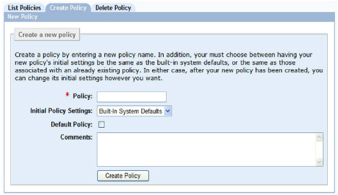

|
IdentityGuard Server 12.0 Administration Guide |
|
IdentityGuard Server 12.0 Administration Guide |
The initial built-in roles provided with Entrust IdentityGuard let only an administrator with the superuser role to create a new policy (see Initial roles). Any administrators with a custom role that includes the policyCreate permission and the All policies option in their role can accomplish this, too. (The role must grant access to all policies in this case because a new policy is not yet in a role’s policy list.)
You may want to modify the default policy that comes with Entrust IdentityGuard or create unique policies that apply to your organization. For example, you may require:
● a policy for auditors that allows for a password lifetime of six months
● a strong policy for administrators with the superuser role that allows a password lifetime of only two months
● different authentication options for different groups of users
1. Log in to the Entrust IdentityGuard Administration interface as the administrator.
 On the
Windows computer where Entrust IdentityGuard is installed
On the
Windows computer where Entrust IdentityGuard is installed
2. Select Policies on the menu bar.
3. Click the Create Policy tab.

4. Enter a name for the new policy in the Policy field.
5. From the Initial Policy Settings list, pick an existing policy from which to copy settings.
Initially, there are just two choices: default and Built-in System Defaults. Although they have the same settings when you first install Entrust IdentityGuard, you can change the settings in default, but you cannot make changes in Built-in System Defaults. Built-in System Defaults is always available to use as a template if you want to create a policy with the Entrust IdentityGuard standard settings.
Note: Always create a new policy by copying settings from an existing policy, and then adjusting settings as required.
6. If you want the new policy to be flagged as the default policy, select Default Policy.
The built-in policy named default continues to exist but is no longer used as the default in cases where a policy is not specified.
7. Optional. Enter comments that explain the purpose of the policy.
8. Click Create Policy.
The View Policy page appears and lists all policy settings. Select options under Policy Category to see the default settings for each category.
9. Modify the settings to your requirements. (See Modifying policies.)